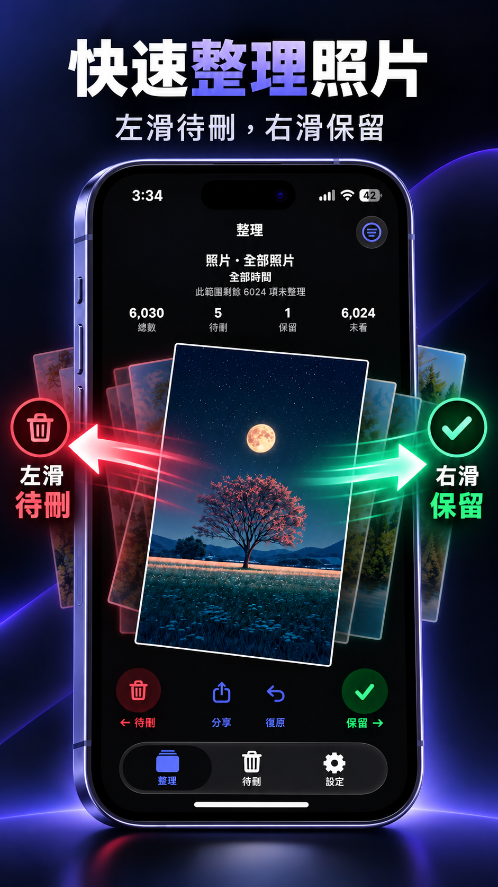
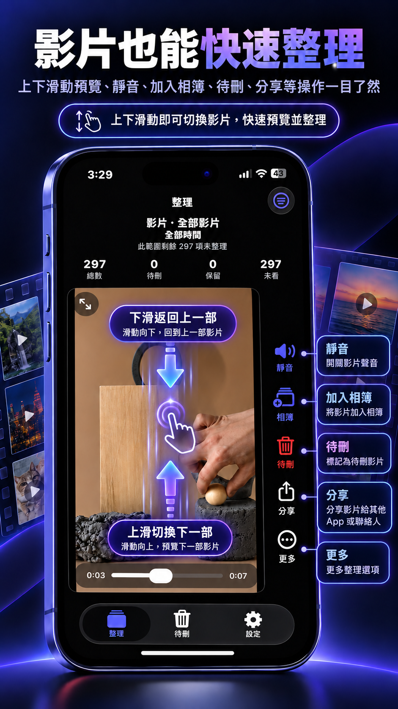
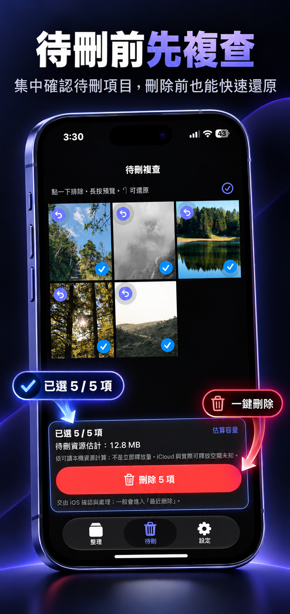

‹ ChaiPhoto
Beta 安裝頁
版本
1.0 Beta
Build 1
年齡分級
12+
歲
類別
工具
工具程式
平台
iPhone
iOS
新功能
Beta版本 1.0 Beta · Build 1
• 支援照片快速整理，左滑待刪、右滑保留。
• 支援影片整理與上下滑動預覽。
• 提供待刪複查，刪除前可再次確認與還原。
• 可依照片、影片、相簿與時間切換整理範圍。
預覽

快速整理照片
左滑待刪，右滑保留。

影片也能快速整理
上下滑動預覽，並提供靜音、加入相簿、待刪與分享操作。

待刪前先複查
集中確認待刪項目，正式刪除前仍可快速還原。
用篩選更快找到目標
依照片、影片、相簿與時間快速切換整理範圍。
關於此 App
ChaiPhoto 是一款協助整理 iPhone 相簿的工具，
希望讓大量照片與影片的日常整理變得更直接、更容易操作。
目前版本主要提供照片與影片的手動整理流程， 包含滑動標記、影片預覽、待刪複查以及整理篩選。
目前版本主要提供照片與影片的手動整理流程， 包含滑動標記、影片預覽、待刪複查以及整理篩選。
照片快速整理
左滑標記待刪，右滑保留照片。
影片整理
上下滑動切換影片，並支援靜音、加入相簿、待刪與分享。
待刪複查
正式刪除前集中確認，並可還原不想刪除的項目。
整理篩選
依照片、影片、相簿與時間縮小整理範圍。
Beta 測試回饋
介面展示用測試回饋
整理流程很直覺
左右滑動就能快速處理照片，操作方式很容易理解。
待刪複查很好用
不用擔心滑錯，最後還能集中確認一次再刪除。
影片整理很方便
上下滑就能快速切換影片，操作比一個一個進相簿方便很多。
上述內容為 Beta 頁面版型展示用示意回饋，不代表公開使用者評分。
App 隱私權
ChaiPhoto 的核心功能需要存取使用者授權的照片與影片，
以提供相簿整理與操作功能。詳細處理方式請參閱隱私權政策。
功能可能涉及的資料
照片與影片
相簿資訊
裝置與 App 診斷資訊
使用者主動提交的錯誤回報內容